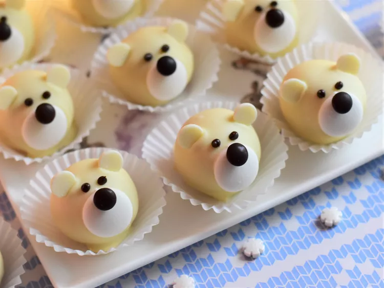

Polar Bear Cheesecake Truffles

With christmas coming up, you will probably like to create some delicious dishes
together with some delicious sweets. These polar bear cheesecake truffel are just
what you need to suprise your family and friends.
Do you love the cuteness of these polar bear faces, keep on reading in order to get to know how to create them.
Ingredients
- 8 ounces cream cheese, softened
- ⅓ cup powdered sugar
- ½ teaspoon vanilla extract
- ⅛ teaspoon almond extract
- 1 pinch salt
- 1 pinch ground nutmeg
- 1 ⅓ cups finely ground graham cracker crumbs
- 12 ounces white chocolate, chopped
- 40 white chocolate chips
- 20 white candy melts
- 2 tablespoons chocolate chips
- 20 mini candy-coated chocolate pieces (such as mini M&Ms®)
Directions
- Cream together cream cheese, powdered sugar, vanilla, almond extract,
salt, and nutmeg in a bowl with an electric mixer until smooth.
Mix in graham cracker crumbs until thoroughly combined.
Cover and refrigerate, about 1 hour.
- Line a baking sheet with parchment paper. Remove truffle filling
mixture from fridge. Scoop out 1 tablespoon truffle filling and roll into a ball.
Place onto the prepared baking sheet. Repeat with remaining filling. Place pan back
in the fridge, about 30 minutes.
- Place chopped white chocolate in a small microwave-safe bowl. Microwave white chocolate
at 50% power until melted, stirring every 30 seconds, 1 to 2 minutes.
- Remove truffle balls from fridge. Use a fork to lower a truffle filling ball into
the melted white chocolate, and thoroughly coat with the chocolate. Lift out of the
chocolate and gently tap to remove excess. Place back onto the parchment lined
baking sheet. Gently press a white chocolate candy melt to the front of the truffle
to make the bear's muzzle, and hold in place for a few seconds to adhere.
Place two white chocolate chips on the top of the truffle to make the ears.
Repeat with remaining truffles. Allow the truffles to harden at room temp for about 10 minutes.
- Place dark chocolate chips into a small microwave-safe bowl, and microwave at
50% power until melted, about 1 minute, stirring every 30 seconds. Pour chocolate into
a piping bag, and snip a small hole at the end. Pipe two eyes onto the truffles,
just above the muzzle. Place a small dot of melted chocolate onto the white candy melt,
and attach the mini chocolate coated candy to make the nose; hold in place for a few seconds
to adhere. Repeat with remaining truffles.
- Place truffles back into fridge to set up, at least 30 minutes. Serve immediately,
or keep stored in the fridge for up to 5 days.